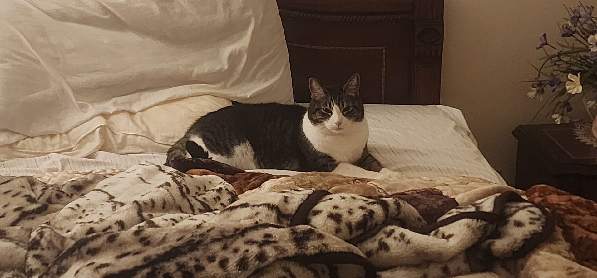
Meet Chip
This is Chip. A tabby cat with a distinctive white and silver-gray coat that defies simple color description. Some call it faded charcoal. Others say it's the color of ancient wisdom. We just call it Chip.
But what sets Chip apart isn't his unusual coloring. It's his mind. Chip is, without exaggeration, the smartest cat that has ever walked this earth. Smarter than most humans, in fact. The evidence is overwhelming.
This website is dedicated to documenting his genius for future generations.
Evidence of Superior Intelligence
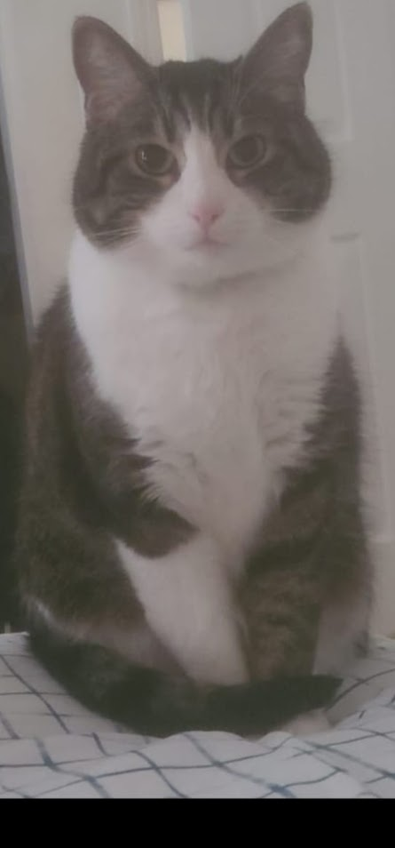
The Problem-Solving Prodigy
Chip doesn't just push doors open. He studies the mechanism, identifies the weakest point, and executes with surgical precision. He figured out the childproof cabinet locks in 47 minutes. It took a human engineer 3 hours to install them.
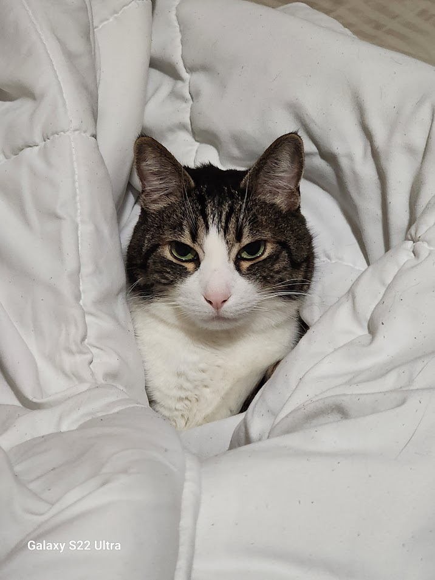
Memory Beyond Measure
Chip remembers every hiding spot, every treat location, every squeaky floorboard. He knows the exact time the refrigerator light comes on and positions himself accordingly. He's never forgotten a face, a slight, or an opportunity.
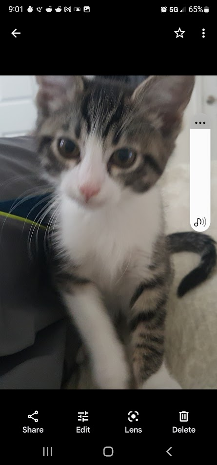
Strategic Communication
While lesser cats meow at random, Chip has developed a sophisticated vocabulary of over 30 distinct vocalizations. Each one precisely calibrated to achieve specific outcomes. He doesn't communicate. He negotiates.
Why Chip Is Smarter Than Most People
Let's be honest. Most people operate on autopilot. They repeat the same mistakes, follow the same routines, and never question their assumptions. Chip does none of these things.
When Chip encounters a closed door, he doesn't just paw at it mindlessly. He analyzes the door. He checks if it's latched, if there's a gap underneath, if the handle can be leveraged. He considers multiple approaches before selecting the optimal solution. This is the scientific method in action, performed by a cat.
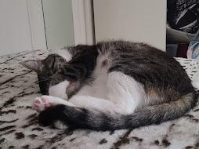
Consider his spatial reasoning. Chip can calculate trajectories that would make a physics professor weep with joy. When he leaps from the floor to the top of a bookshelf in a single bound, he's performing instantaneous vector calculations accounting for gravity, air resistance, and landing surface stability. He lands perfectly every time. Can you say the same when you parallel park?
His emotional intelligence is equally remarkable. Chip knows exactly when you need comfort and when you need space. He can read a room better than any diplomat. He's never once sent an awkward text or made a social situation worse. That's more than can be said for most humans.
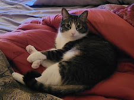
And then there's his work ethic. Chip sleeps 16 hours a day, but those 8 waking hours are pure, focused productivity. No procrastination. No scrolling through social media. Just strategic napping, calculated meals, and intense observation of his domain. He's achieved work-life balance that productivity gurus can only dream about.
Some cats chase laser pointers. Chip knows the photons are an illusion. He's moved beyond.
- Observed Truth
Stories of Chip's Genius
The Great Treat Heist of 2024
The treats were in a sealed container, inside a closed cabinet, behind a childproof lock. They had been there for three days. Chip observed. Chip waited. Chip planned.
On the fourth morning, with the precision of a Swiss watch, Chip executed. First, he knocked over a glass in the kitchen, sending his human running. While the human was distracted with the cleanup, Chip had already opened the cabinet. Not by brute force. By applying pressure to the exact point where the lock mechanism was weakest.
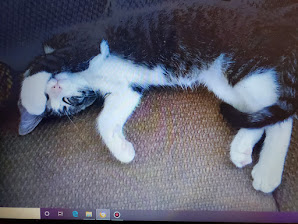
The container was supposedly cat-proof. It had a twist-lock mechanism that required opposable thumbs. Chip doesn't have opposable thumbs. What Chip has is patience and the ability to roll objects off surfaces. The container rolled off the counter, popped open on impact, and treats scattered across the floor.
By the time his human returned, Chip was sitting three feet away from the treats, grooming himself, looking like he had just woken up from a nap. Plausible deniability. A concept most humans learn in law school. Chip was born knowing it.
The Veterinarian Incident
They say you can't outsmart the vet. They haven't met Chip.
When the carrier came out, most cats run. Chip studied the pattern. He learned that the carrier only appeared on certain days, at certain times, following certain behavioral cues from his human. He began preemptively hiding before the carrier even left the closet.
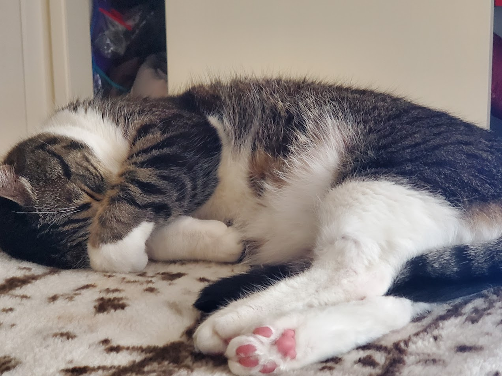
But here's where genius separates from mere intelligence: Chip didn't just hide. He created decoy hiding spots. He would deliberately be seen entering the bedroom closet, then silently relocate to the space behind the washing machine. His human would search the obvious location while Chip remained invisible.
When eventually captured through the unfair advantage of superior human mobility, Chip displayed a new strategy at the vet's office. He went completely limp. Not out of fear, but out of protest. The vet couldn't examine a cat that had become a liquid. The appointment was rescheduled. Chip won.
The 3 AM Awakening System
Chip developed a sophisticated multi-stage alarm system to ensure breakfast is served at precisely 5:00 AM, regardless of weekends, holidays, or human fatigue levels.
Stage 1 begins at 4:30 AM: subtle stirring, small noises, a gradual escalation. If this fails, Stage 2 activates: walking across the sleeping human with calculated weight distribution to maximize discomfort without causing actual awakening.
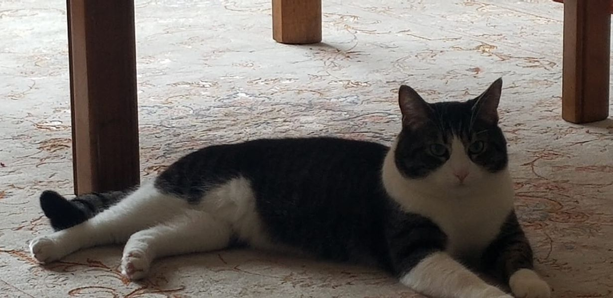
Stage 3, deployed only when necessary, involves the systematic knocking of small objects off nightstands. The genius here is in the object selection. Chip starts with expendable items, glasses of water, tissues, pens. He saves the phone for last. He knows the phone is valuable. He uses this knowledge.
The human once tried sleeping with the bedroom door closed. Chip responded by scratching the door in a pattern that spelled out SOS in Morse code. Coincidence? Perhaps. But the door hasn't been closed since.
The Gallery
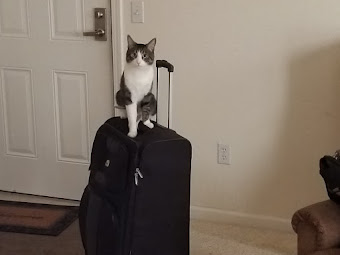
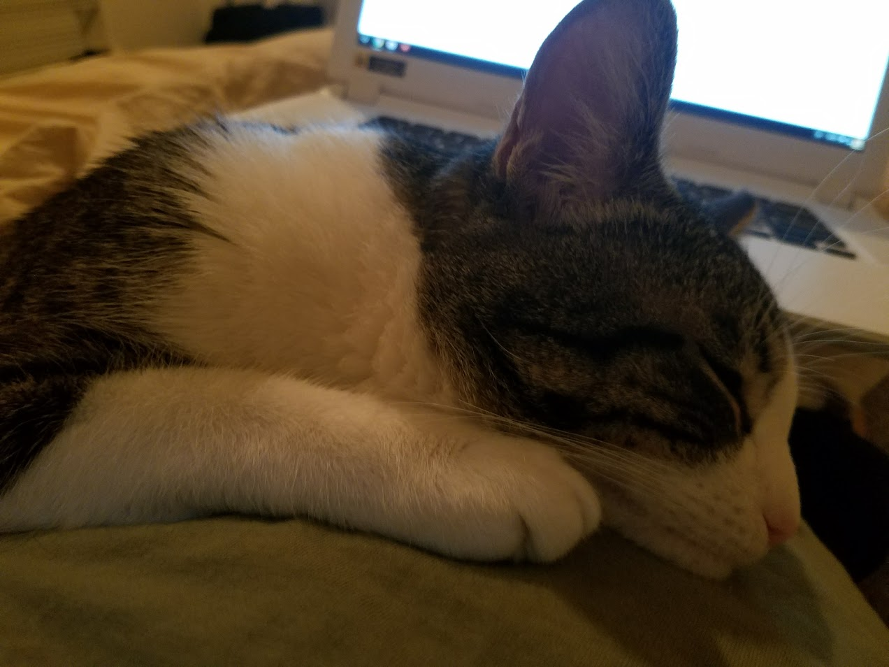
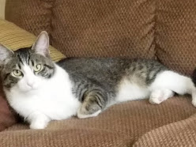
In a world of average cats, Chip reads at a post-graduate level.
- Scientific Estimation
The Philosophical Observer
Watch Chip sit by the window. What do you see? A cat staring outside? No. You see a philosopher contemplating existence.
Chip watches birds not because he wants to catch them. He's long since moved past base predatory instincts. He watches them because he's studying their flight patterns, their social hierarchies, their communication methods. He's gathering data.
Sometimes Chip will stare at a wall for twenty minutes. Lesser minds might assume he's seen a bug. Chip has seen no bug. Chip is thinking. About what? We can never know. The inner workings of a genius mind are not meant for ordinary comprehension.
When Chip looks at you, he's not just seeing you. He's seeing through you. He knows what you had for breakfast. He knows you're stressed about work. He knows the WiFi password even though he's never used a computer. He knows everything.
His name is Chip. And he is the smartest cat that ever lived.